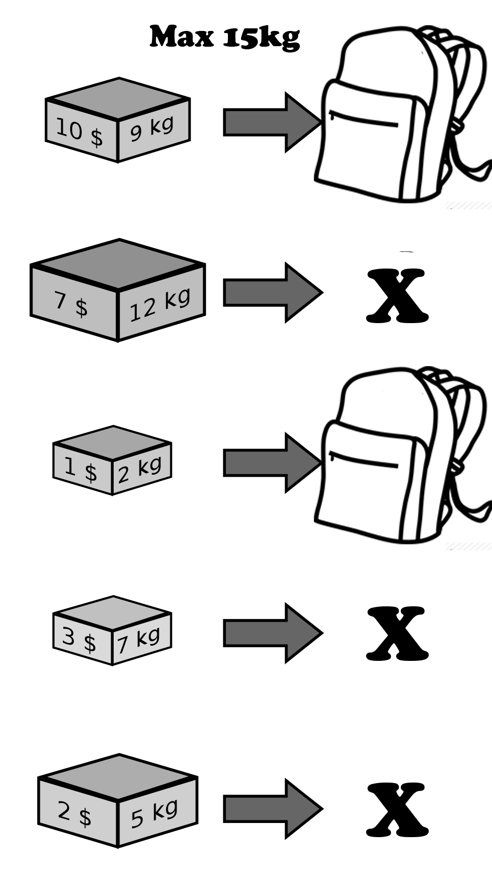

Magic of Cryptography
Merkle-Hellman Cipher
Small piece of history
Knapsack cipher or rather Merkle-Hellman cipher was invented in 1978 by Ralph Merkle and Martin Hellman. It is assymetric cryptosystem with public key. At the beginning it was considered as the perfect cipher. One of the authors announced that person who will break knapsack cryptosystem will win special prize. Unfortunately four years later Merkle was forced to give Adi Shamir 100 dollars in cash who found weakness in the cipher. Moreover Adi Shamir is one of the inventors of more complicated asymmetric cryptosystem which provides under few conditions 100% of safety... that must be so embarassing for Merkle.Let us move to the cryptosytem, it is based on knapsack problem, to be more precise a special case of this algebraic problem − sum of the subset problem. The problem is defined as follows: we have got a set of numbers A and a number n. Our goal is to find a subset of A which is equall to our number n.
In many cases there are more than one subsets which sum gives us n so we have to add special condition to our A set − it has to be superincreasing. Superincreasing set of numbers is the set in which every next number is higher than the sum of previous numbers.
Ok, we have coped with many results but now our problem became really easy to solve... because to find our subset we start from the highest element of A set and check if it is smaller than sum n. If yes, we are subtract that element from the n and repeat these steps with the result of subtraction and next element of the set.
Problem is solvable in polynominal time.
Keys
Pair of keys consists of two different sets of numbers: hard and easy one. The private key is the easy one − superincreasing set of numbers A, modulus m (sum of set A) and w multiplier. The public key is the hard set of numbers – set B generated from the private key. To obtain public key, we multiply each element of set A by multiplier w and apply the modulo m of our result. These elements give us the public key − B set.Encryption
During encryption sender changes the message into binary string and performs multiplication of all consecutive bits by the elements of the public key. If the key lenght is longer or the same size as the message, sender crates sum of all results of multiplications which gives the ciphertext. If the key is smaller, sender has to create sums of x multiplications, where x is the lenght of the key. In that case cipher text becomes group of numbers.Decryption
Decryption is as easy as the encryption but it needs one more step.At the beginning receiver, finds modulo of m of the message multiplied by the inverse of the multiplier w. Then he needs to find subset of his B set which sum gives the result of the modulo operation.
Each element which belongs to the subset gives 'true' - bit '1' of plain text, and other elements of B gives false - '0' bit of plain text.
Then the last step is just to convert string of bits into more readable text.
Example
Let us look at the practical example which surely will clarify everything.Mary wants to encrypt the hour of secret meeting with Anna (5pm). To get message from Mary, Anna has to prepare pair of keys which will be used in the cipher.
First step is to choose private key. Anna starts with choosing superincreasing set A. 
A = {2, 5, 8, 17} (as You can observe every next number is higher than a sum of previous numbers). m (modulus) as we said before is the sum of all elements of the A set.
m = 32
Now we have to choose multiplier w which has to be coprime with modulus and 1 < w < m
w = 11
The private key is ready, it is composed of these three elements: A, m and w. Now Anna can generate public key for Mary. To do that Mary needs to perform modulo of m operation of each A element multiplied by the w multiplier.
2 * 11 mod 32 = 22
5 * 11 mod 32 = 23
8 * 11 mod 32 = 24
17 * 11 mod 32 = 27
The public key is the set B = {22, 23, 24, 27}
As we mentioned before Mary wants to encrypt "5". First of all, she needs to change the 5 into binary form.
5 in binary is 0101
Next Mary multiplies all consecutive numbers of Anna's public key by the bits of the message.
22 * 0 = 0
23 * 1 = 23
24 * 0 = 0
27 * 1 = 27
Cipher text is the sum of all products of above multiplications (0 + 23 + 0 + 27) which is 50. So that is Mary's message looks like.
Now Anna has to decrypt the message. She has to perform one operation – she has to find result of operation modulo m of Marys message multiplier by inverse of w (which is 3).
50 * 3 mod 32 = 22
Next-to-last step is to find subset od B which sum gives 22. Anna checks all consecutives to find the subset in that way:
| 22 - 17 = 5 > 0 | 1 | Anna subtracts from 22 the highest element of B. Result is higher than 0 so she gets bit '1' of the plain text. If the subtraction at each step gives positive result, Anna gets '1' as bit of the plain text, if the result is negative she gets '0'. |
| 5 - 8 < 0 | 0 | Now she takes result of previous subtraction, and subtracts from it next element of B. This time result is smaller than 0 so we do not perform subtraction so Anna obtains bit '0' of plain text. |
| 5 - 5 = 0 | 1 | Anna subtracts next elements which gives her result that is not smaller than 0 (she gets 0) which again gives her bit '1' of the plain text. |
| 0 - 2 < 0 | 0 | Anna subtracts the last element of B from the result of previous subtraction which gives her negative result so last bit of the plain text is '0'. |
The last step is to read all bits and change them into the decimal system - 0101 gives 5.
For this time Anna knows when to go to the secret place to meet Mary.
If You want to go to the practical part click on the key